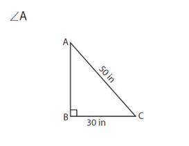
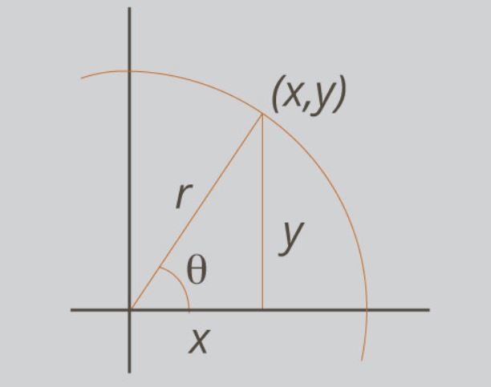

4.0 Simple Triangle Trigonometry¶
4.0.1 Trigonometric Ratios¶
In a Right Triangle, where \(\theta\) is one of the two acute angles, there are 6 Trigonometric Ratios:
Sine \(\theta = \frac{\text{opposite}}{\text{hypotenuse}}\)
Cosine \(\theta = \frac{\text{adjacent}}{\text{hypotenuse}}\)
Tangent \(\theta = \frac{\text{opposite}}{\text{adjacent}}\)
Cosecant \(\theta = \frac{\text{hypotenuse}}{\text{opposite}}\)
Secant \(\theta = \frac{\text{hypotenuse}}{\text{adjacent}}\)
Cotangent \(\theta = \frac{\text{adjacent}}{\text{opposite}}\)
Note
Cosecant, Secant, and Cotangent are Reciprocals of Sine, Cosine, and Tangent.
Triangle Sides:
Adjacent: Side next to \(\theta\)
Opposite: Side opposite of \(\theta\)
Hypotenuse: Longest Side
- Example
- 
Missing Side:
Side AB = 40
Note
Solve using Pythagorean Theorem
Trigonometric Ratios:
sin \(\angle A = \frac{30}{50}\)
cos \(\angle A = \frac{40}{50}\)
tan \(\angle A = \frac{30}{40}\)
csc \(\angle A = \frac{50}{30}\)
sec \(\angle A = \frac{50}{40}\)
cot \(\angle A = \frac{40}{30}\)
4.0.2 Triangle on \(x, y\) Plane¶
You might see triangles on a graph, like this:
{kind=link}
Note
The sides are no longer named Adjacent, Opposite, and Hypotenuse. Instead they are referred to as Side-x, Side-y, and Side-r.
The Trigonometric Ratios remain the same, but the representation changes:
|
|
Note
If the Triangle is embedded in a Unit Circle, then:
\(x = r \cos{\theta}\) \(y = r \sin{\theta}\)
And by extension the Pythagorean Theorem becomes:
\(\cos^2\theta + \sin^2\theta = 1\)
\(\cos^2\theta\) means \((\cos{\theta})^2\) and NOT \(\cos{\theta^2}\)